VE370 Intro to Computer Organization
Project 2 Individual Report
FA 2020
| Name | Stud. ID |
|---|---|
| Zhou Zhanpeng | 518021910594 |
Abstract
In this project, I used the modeling language verilog to implement the Single-Cycle Processor based on MIPS instruction set. The single cycle processor supports multiple instructions, such as lw, add, jump and etc. In this report, I will firstly introduce my modeling and implementation of each component of the single cycle processor and how I combine them together to process multiple instructions, then, I will compare the simulated results of my single cycle processor and the theoretical results when processing the same set of instructions. Finally, verilog sources files and peer evaluation will be provided.
Description
Overview
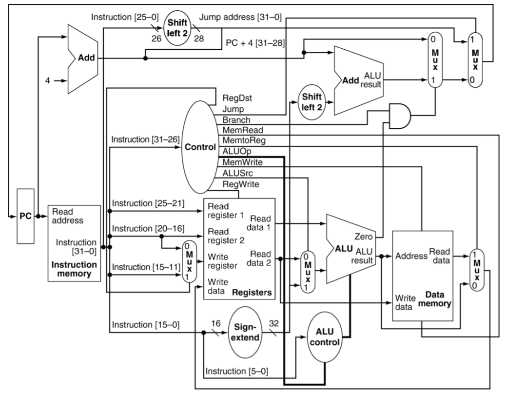
Figure 1. Single cycle implementation of MIPS architecture
From a general point of view, my implementation and modeling basically follows above figure, where following instructions can be supported:
- The memory-reference instructions load word (
lw) and store word (sw) - The arithmetic-logical instructions
add,addi,sub,and,andi,or, andslt - The jumping instructions branch equal (
beq) and jump (j)
However, the above figure doesn’t support the bne instruction, which will be talked in later sections.
From the figure 1, there are multiple major components including instruction memory, data memory, register file, control unit, ALU control unit, ALU and some special muxes and they will be discussed in details one by one later.
Memory
The implementation of the memory part includes Data Memory (module data_mem in the source code), Instruction Memory (module Instr_mem in the source code) and Register File (module reg_file in the source file). There are some typical designing details in this project:
The data is byte-addressable. Though this project is based on word addresses, the real memory units supported by MIPS should be byte-addressable. There are some typical MIPS instructions that needs the addresses of byte, such as lb, lbu and lh. Though those instruction are not needed in this project, we still consider this condition in case we could develop more instructions through this project in future.
The data memory and register file are driven by the negative edge of clock in this project. This design may lengthen the critical path, but it could avoid some hazards:
xxxxxxxxxx81always @(negedge clk) begin2if (mem_write) begin3memory[read_addr] write_data[word 1:word byte];4memory[read_addr 1] write_data[word byte 1:word 2byte];5memory[read_addr 2] write_data[word 2byte 1:word 3byte];6memory[read_addr 3] write_data[word 3byte 1:0];7end8endTake a part of the implementation of data memory as an example. If we update data in the positive edge, which is the beginning of a new clock cycle, the value of some variables may stay as the former clock cycle while some already change. If the write data has changed and the address of the write data stays the same, then wrong data will be updated into the write address of the last instruction. With the time of the first half of the clock cycle, this hidden hazard could be solved.
ALU Unit & ALU Control Unit
ALU control unit takes two inputs, ALUop and funct, and outputs an 4-bit ALU control signal. The design is in the table below. Notice that actually j type instruction doesn’t need to perform ALU operation, thus, we just randomly picked one ALUop and corresponding ALU control for it.
| Op code | Operation | ALUop | Funct | ALU control | ALU function |
|---|---|---|---|---|---|
| lw (100011) | load word | 00 | xxxxxx | 0010 | add |
| sw (101011) | save word | 00 | xxxxxx | 0010 | add |
| addi (001000) | add immediate | 00 | xxxxxx | 0010 | add |
| beq (000100) | branch if equal | 01 | xxxxxx | 0110 | subtract |
| bne (000101) | branch if not equal | 01 | xxxxxx | 0110 | subtract |
| andi (001100) | and immediate | 11 | xxxxxx | 0000 | and |
| R-type (000000) | add | 10 | 100000 | 0010 | add |
| sub | 10 | 100010 | 0110 | subtract | |
| and | 10 | 100100 | 0000 | and | |
| or | 10 | 100101 | 0001 | or | |
| slt | 10 | 101010 | 0111 | slt | |
| j | jump | 00 | xxxxxx | 0010 | add |
Then, correspondingly, ALU unit will perform the ALU functions, where these functions can be simply modeled by verilog.
Control Unit
The control unit is used to generate control signals from different 6 bits opcodes. From the structure of pipeline in VE370 lectures, the control unit should generate 9 outputs as follows:
xxxxxxxxxx31initial begin2 ALUop 2'b00; RegDst 0; Jump 0; Branch 0; MemRead 0; MemtoReg 0; MemWrite 0; ALUSrc 0; RegWrite 0; Beq 0;3endActually, according to the control signal design introduced in lecture, there should be only 8 signals. However, here I introduce another control signal beq which indicates whether the instruction is beq. Based on beq, we can make following logic:
- If
beq = 1,branch = 1andALU's zero = 1, we will branch to target address. - if
beq = 0,branch = 1andALU’s zero = 0, we will branch to the target address. - Otherwise, we will load
PC + 4toPCregister.
We can simple realize above logic by and gate and 2-by-1mux and with this additional design, our single cycle processor can support bne instruction now.
Simulation
In this section, we will compare the textual simulated results with theoretical results for processing the same instructions. The instructions are from the file InstructionMem_for_P2_demo.txt, which is attached in the appendix.
Note: the picture is used to show the simulated results and the table is used to show the theoretical results.
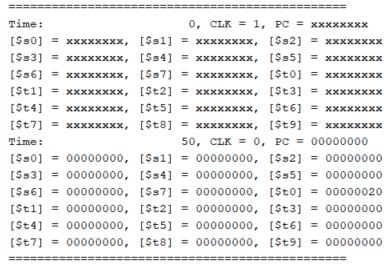
| cycle | Instruction | Result |
|---|---|---|
| 0 | addi $t0, $zero, 0x20 | [$t0] = 0x20 |
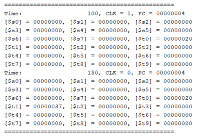
| cycle | Instruction | Result |
|---|---|---|
| 1 | addi $t1, $zero, 0x37 | [$t1] = 0x37 |
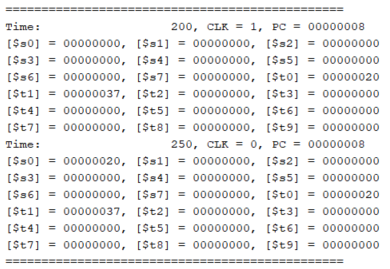
| cycle | Instruction | Result |
|---|---|---|
| 2 | and $s0, $t0, $t1 | [$s0] = 0x20 |
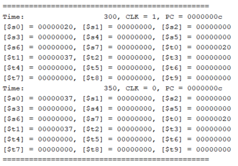
| cycle | Instruction | Result |
|---|---|---|
| 3 | or $s0, $t0, $t1 | [$s0 = 0x37] |
| cycle | Instruction | Result |
|---|---|---|
| 4 | sw $s0, 4($zero) | data.mem[4] = 0x37 |
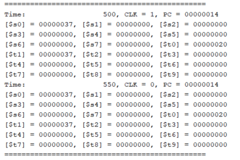
| cycle | Instruction | Result |
|---|---|---|
| 5 | sw $t0, 8($zero) | data.mem[8] = 0x20 |
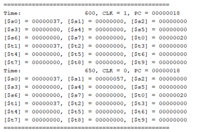
| cycle | Instruction | Result |
|---|---|---|
| 6 | add $s1, $t0, $t1 | [$s1] = 0x57 |

| cycle | Instruction | Result |
|---|---|---|
| 7 | sub $s2, $t0, $t1 | [$s2] = 0xffffffe9 |
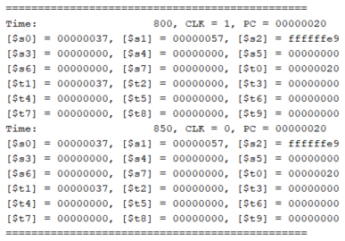
| cycle | Instruction | Result |
|---|---|---|
| 8 | addi $t0, $zero, 0x20 | nothing |
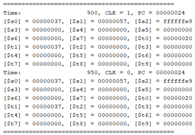
| cycle | Instruction | Result |
|---|---|---|
| 9 | addi $t0, $zero, 0x20 | nothing |
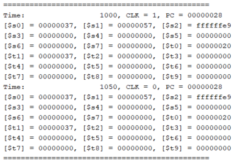
| cycle | Instruction | Result |
|---|---|---|
| 10 | addi $t0, $zero, 0x20 | nothing |
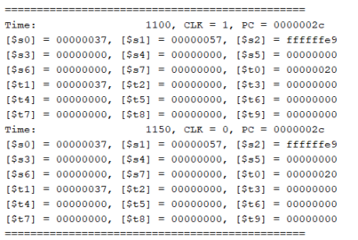
| cycle | Instruction | Result |
|---|---|---|
| 11 | beq $s1, $s2, error0 | not branch |
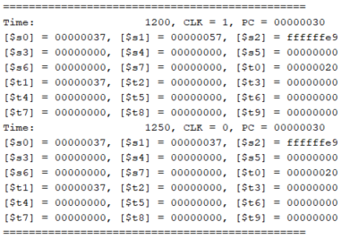
| cycle | Instruction | Result |
|---|---|---|
| 12 | lw $s1, 4($zero) | [$s1] = 0x37 |
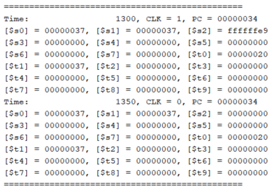
| cycle | Instruction | Result |
|---|---|---|
| 13 | andi $s2, $s1, 0x48 | [$s2] = 0x0 |
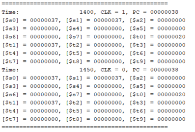
| cycle | Instruction | Result |
|---|---|---|
| 14 | addi $t0, $zero, 0x20 | nothing |
| cycle | Instruction | Result |
|---|---|---|
| 15 | addi $t0, $zero, 0x20 | nothing |
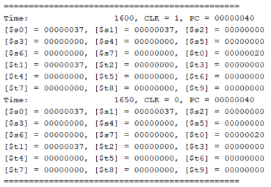
| cycle | Instruction | Result |
|---|---|---|
| 16 | addi $t0, $zero, 0x20 | nothing |
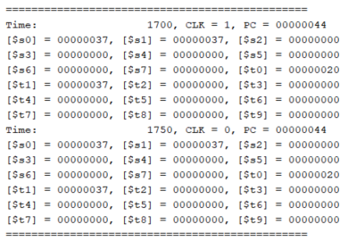
| cycle | Instruction | Result |
|---|---|---|
| 17 | beq $s1, $s2, error1 | nothing |
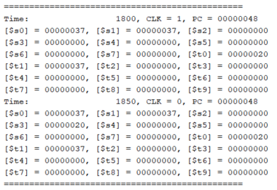
| cycle | Instruction | Result |
|---|---|---|
| 18 | lw $s3, 8($zero) | [$s3 = 0x20] |
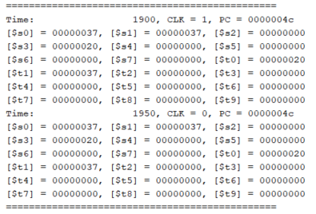
| cycle | Instruction | Result |
|---|---|---|
| 19 | addi $t0, $zero, 0x20 | nothing |
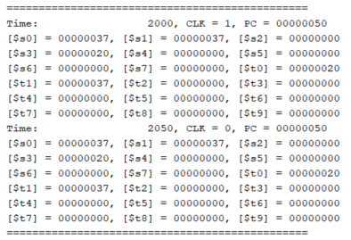
| cycle | Instruction | Result |
|---|---|---|
| 20 | addi $t0, $zero, 0x20 | nothing |
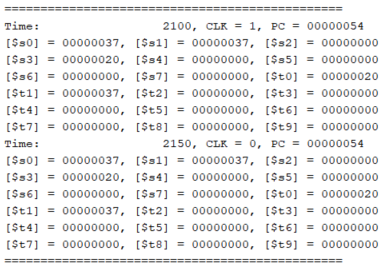
| cycle | Instruction | Result |
|---|---|---|
| 21 | addi $t0, $zero, 0x20 | nothing |
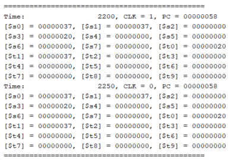
| cycle | Instruction | Result |
|---|---|---|
| 22 | beq $s0, $s3, error2 | nothing |
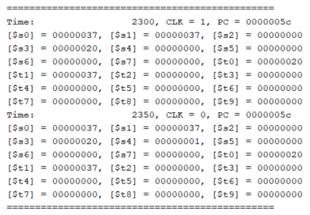
| cycle | Instruction | Result |
|---|---|---|
| 23 | slt $s4, $s2, $s1 (Last) | [$s4 = 0x1] |
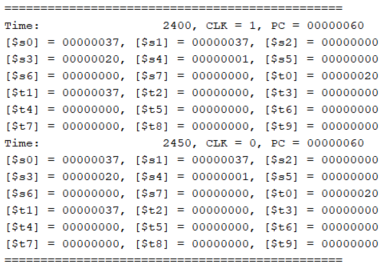
| cycle | Instruction | Result |
|---|---|---|
| 24 | addi $t0, $zero, 0x20 | nothing |
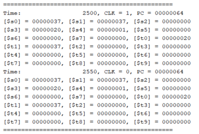
| cycle | Instruction | Result |
|---|---|---|
| 25 | addi $t0, $zero, 0x20 | nothing |
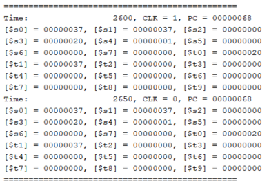
| cycle | Instruction | Result |
|---|---|---|
| 26 | addi $t0, $zero, 0x20 | nothing |
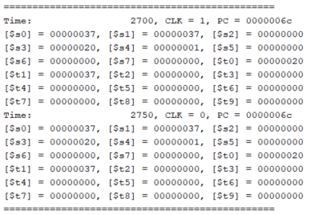
| cycle | Instruction | Result |
|---|---|---|
| 27 | beq $s4, $0, EXIT | nothing |
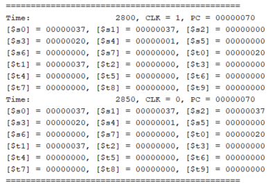
| cycle | Instruction | Result |
|---|---|---|
| 28 | add $s2, $s1, $0 | [$s2 = 0x37] |
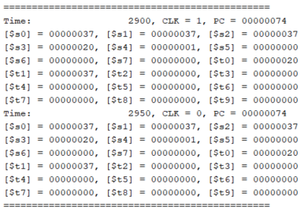
| cycle | Instruction | Result |
|---|---|---|
| 29 | j Last | jump to last |
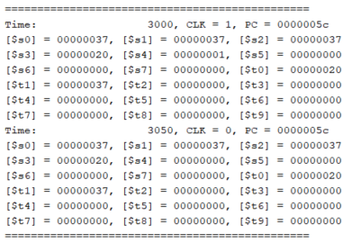
| cycle | Instruction | Result |
|---|---|---|
| 30 | slt $s4, $s2, $s1 (Last) | [$s4 = 0x0] |
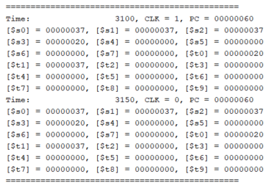
| cycle | Instruction | Result |
|---|---|---|
| 31 | addi $t0, $zero, 0x20 | nothing |
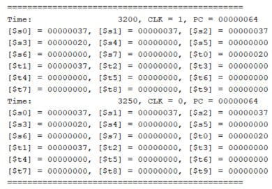
| cycle | Instruction | Result |
|---|---|---|
| 32 | addi $t0, $zero, 0x20 | nothing |
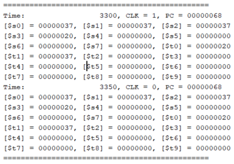
| cycle | Instruction | Result |
|---|---|---|
| 33 | addi $t0, $zero, 0x20 | nothing |
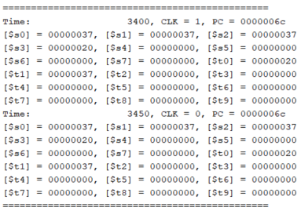
| cycle | Instruction | Result |
|---|---|---|
| 34 | beq $s4, $0, EXIT | jump to Exit |
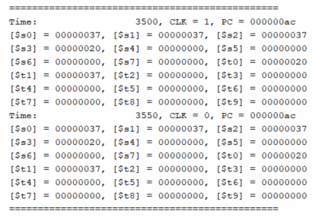
| cycle | Instruction | Result |
|---|---|---|
| 35 | nop | nothing |
It is clear that the simulated results highly concides with the theoretical results, which means our implementation is successful.
Conclusion & Discussion
In this project, I am asked to model a single cycle processor which can support mulitple MIPS instructions including lw, sub,sw, beq and etc. From the simulated result, it is clear that our results highly coincides with the theoretical results which means my implementation is successful. However, considering the performance of the single cycle processor, we should improve the current design, therefore, in the second part of this project 2, I will introduce another kind of processor, which is called Pipeline processor.
Peer Evaluation
| Name | Level of Contribution | Description of contribution |
|---|---|---|
| Zhou Zhanpeng | 5 | Modeling + Implementing |
| Liu Yihua | 5 | Modeling + Implementing |
| Shen Yang | 5 | Modeling + Implementing |
| Peng Haotian | 5 | Modeling + Implementing |
Reference
[1] Zheng, G., 2020. Ve370 Introduction To Computer Organization Project 2.
Appendix
Source Code
ALU.v
xxxxxxxxxx331`timescale 1ns 1ps23module ALU(zero, result, a, b, ALU_control);4 parameter word 32;5 input [word 1:0] a, b;6 input [3:0] ALU_control;7 output zero;8 output [word 1:0] result;9 10 reg [word 1:0] result;11 12 initial begin13 result 0;14 end15 16 always @(a or b or ALU_control) begin17 case (ALU_control)18 // add19 4'b0010: result a b;20 // sub21 4'b0110: result a b;22 // and23 4'b0000: result a b;24 // or25 4'b0001: result a b;26 // slt27 4'b0111: result (a < b)1:0;28 default: result 0;29 endcase30 end31 32 assign zero ((result[31:0]));33endmoduleALUcontrol.v
xxxxxxxxxx321`timescale 1ns 1ps23module ALUcontrol(ALU_control, funct, ALU_op);4 input [1:0] ALU_op;5 input [5:0] funct;6 output [3:0] ALU_control;7 8 reg [3:0] ALU_control;9 10 initial begin11 ALU_control 0;12 end13 14 always @ (funct or ALU_op) begin15 case (ALU_op)16 2'b00: ALU_control 4'b0010;17 2'b01: ALU_control 4'b0110;18 2'b11: ALU_control 4'b0000;19 2'b10: begin20 case (funct)21 6'b100000: ALU_control 4'b0010;22 6'b100010: ALU_control 4'b0110;23 6'b100101: ALU_control 4'b0001;24 6'b101010: ALU_control 4'b0111;25 6'b100100: ALU_control 4'b0000; 26 default: ALU_control 4'b0000;27 endcase28 end29 default: ALU_control < 4'b0000;30 endcase31 end32endmodulePC.v
xxxxxxxxxx271`timescale 1ns 1ps23module PC(curr, clk, next);4 parameter word 32;5 6 input [word 1:0] next;7 input clk;8 output [word 1:0] curr;9 10 reg [word 1:0] PC_mem;11 12 initial begin13 ("===============================================");14 ("Time: %d, CLK = %b, PC = %h", , 1'b1, PC_mem);15 PC_mem 0;16 end1718 always @(clk) begin19 if (clk 1'b1) begin20 PC_mem next;21 ("===============================================");22 end23 ("Time: %d, CLK = %b, PC = %h", , clk, PC_mem);24 end 25 26 assign curr PC_mem;27endmoduleadder.v
xxxxxxxxxx181`timescale 1ns 1ps23module adder(result, a, b);4 parameter word 32;56 input [word 1:0] a, b;7 output [word 1:0] result;8 9 reg [word 1:0] result;10 11 initial begin12 result 0;13 end14 15 always @(a, b) begin16 result a b;17 end18endmodulecontrol.v
xxxxxxxxxx601module control(RegDst, Jump, Branch, MemRead, MemtoReg, ALUop, MemWrite, ALUSrc, RegWrite, Beq, op);2 input [5:0] op;3 output RegDst, Jump, Branch, MemRead, MemtoReg, MemWrite, ALUSrc, RegWrite, Beq;4 output [1:0] ALUop;56 reg RegDst, Jump, Branch, MemRead, MemtoReg, MemWrite, ALUSrc, RegWrite, Beq;7 reg [1:0] ALUop;8 9 initial begin10 ALUop 2'b00; RegDst 0; Jump 0; Branch 0; MemRead 0; MemtoReg 0; MemWrite 0; ALUSrc 0; RegWrite 0; Beq 0;11 end1213 always @(op) begin14 case (op)15 // lw16 6'b100011: begin17 ALUop 2'b00; RegDst 0; Jump 0; Branch 0; MemRead 1; MemtoReg 1; MemWrite 0; ALUSrc 1; RegWrite 1; Beq 0;18 end1920 // sw21 6'b101011: begin22 ALUop 2'b00; RegDst 0; Jump 0; Branch 0; MemRead 0; MemtoReg 0; MemWrite 1; ALUSrc 1; RegWrite 0; Beq 0;23 end2425 // R-type26 6'b000000: begin27 ALUop 2'b10; RegDst 1; Jump 0; Branch 0; MemRead 0; MemtoReg 0; MemWrite 0; ALUSrc 0; RegWrite 1; Beq 0;28 end2930 // addi31 6'b001000: begin32 ALUop 2'b00; RegDst 0; Jump 0; Branch 0; MemRead 0; MemtoReg 0; MemWrite 0; ALUSrc 1; RegWrite 1; Beq 0;33 end3435 // andi36 6'b001100: begin37 ALUop 2'b11; RegDst 0; Jump 0; Branch 0; MemRead 0; MemtoReg 0; MemWrite 0; ALUSrc 1; RegWrite 1; Beq 0;38 end3940 // beq41 6'b000100: begin42 ALUop 2'b01; RegDst 0; Jump 0; Branch 1; MemRead 0; MemtoReg 0; MemWrite 0; ALUSrc 0; RegWrite 0; Beq 1;43 end4445 // bne46 6'b000101: begin47 ALUop 2'b01; RegDst 0; Jump 0; Branch 1; MemRead 0; MemtoReg 0; MemWrite 0; ALUSrc 0; RegWrite 0; Beq 0;48 end4950 // j51 6'b000010: begin52 ALUop 2'b00; RegDst 0; Jump 1; Branch 0; MemRead 0; MemtoReg 0; MemWrite 0; ALUSrc 0; RegWrite 0; Beq 0;53 end54 55 default: begin56 ALUop 2'b00; RegDst 0; Jump 0; Branch 0; MemRead 0; MemtoReg 0; MemWrite 0; ALUSrc 0; RegWrite 0; Beq 0;57 end58 endcase59 end60endmoduledata_mem.v
xxxxxxxxxx361module data_mem(read_data, read_addr, write_data, mem_write, mem_read, clk);2 parameter word 32;3 parameter byte 8;4 parameter number 1000;5 6 input [word 1:0] read_addr, write_data;7 input mem_write, mem_read, clk;8 output [word 1:0] read_data;9 10 reg [byte 1:0] memory[number 1:0];11 reg [word 1:0] read_data;1213 integer n;1415 initial begin16 for (n 0; n < number; n n 1) begin17 memory[n] 0;18 end19 end20 21 always @(negedge clk) begin22 if (mem_write) begin23 memory[read_addr] write_data[word 1:word byte];24 memory[read_addr 1] write_data[word byte 1:word 2byte];25 memory[read_addr 2] write_data[word 2byte 1:word 3byte];26 memory[read_addr 3] write_data[word 3byte 1:0];27 end28 end29 30 always @(mem_read or read_addr) begin31 read_data 'bz;32 if (mem_read) begin33 read_data {memory[read_addr], memory[read_addr1], memory[read_addr2], memory[read_addr3]};34 end 35 end36endmoduleinstr_mem.v
xxxxxxxxxx191module instr_mem(instruction, read_addr);2 parameter word 32;3 parameter byte 8;4 parameter line 42;5 6 input [word 1:0] read_addr;7 output [word 1:0] instruction;8 9 reg [byte 1:0] mem[4line 1:0];10 reg [word 1:0] instruction;11 12 initial begin13 ("D:/JI/2020 fall/VE370 Intro to Computer Organization/Projects/P2/InstructionMem_for_P2_Demo.txt", mem);14 end15 16 always @ (read_addr) begin17 instruction {mem[read_addr], mem[read_addr 1], mem[read_addr2], mem[read_addr3]};18 end19endmodulemux.v
xxxxxxxxxx211module mux(F, sel, A, B);2 parameter N 32;3 4 input sel;5 input [N1 : 0] A, B;6 output [N1 : 0] F; 7 8 reg [N1 : 0] F;9 10 initial begin11 F 0;12 end13 14 always @ (A, B, sel) begin15 case (sel)16 1'b0 : F A;17 1'b1 : F B;18 default : F 0;19 endcase20 end21endmodulereg_file.v
xxxxxxxxxx421module reg_file(read_data1, read_data2, read_addr1, read_addr2, write_addr, write_data, regwrite, clk);2 parameter addr_size 5;3 parameter word 32;4 5 input [addr_size 1:0] read_addr1, read_addr2, write_addr;6 input [word 1:0] write_data;7 input regwrite, clk;8 output [word 1:0] read_data1, read_data2;9 10 reg [word 1:0] reg_mem[2addr_size 1:0];11 integer n;12 13 initial begin14 ("[$s0] = %h, [$s1] = %h, [$s2] = %h", reg_mem[16], reg_mem[17], reg_mem[18]);15 ("[$s3] = %h, [$s4] = %h, [$s5] = %h", reg_mem[19], reg_mem[20], reg_mem[21]);16 ("[$s6] = %h, [$s7] = %h, [$t0] = %h", reg_mem[22], reg_mem[23], reg_mem[8]);17 ("[$t1] = %h, [$t2] = %h, [$t3] = %h", reg_mem[9], reg_mem[10], reg_mem[11]);18 ("[$t4] = %h, [$t5] = %h, [$t6] = %h", reg_mem[12], reg_mem[13], reg_mem[14]);19 ("[$t7] = %h, [$t8] = %h, [$t9] = %h", reg_mem[15], reg_mem[24], reg_mem[25]);20 for (n 0; n < 2addr_size; n n 1) begin21 reg_mem[n] 0;22 end23 end2425 always @(clk) begin26 if (clk 1'b0 regwrite 1'b1) begin27 reg_mem[write_addr] write_data;28 end29 ("[$s0] = %h, [$s1] = %h, [$s2] = %h", reg_mem[16], reg_mem[17], reg_mem[18]);30 ("[$s3] = %h, [$s4] = %h, [$s5] = %h", reg_mem[19], reg_mem[20], reg_mem[21]);31 ("[$s6] = %h, [$s7] = %h, [$t0] = %h", reg_mem[22], reg_mem[23], reg_mem[8]);32 ("[$t1] = %h, [$t2] = %h, [$t3] = %h", reg_mem[9], reg_mem[10], reg_mem[11]);33 ("[$t4] = %h, [$t5] = %h, [$t6] = %h", reg_mem[12], reg_mem[13], reg_mem[14]);34 ("[$t7] = %h, [$t8] = %h, [$t9] = %h", reg_mem[15], reg_mem[24], reg_mem[25]);35 if (clk 1'b1) begin36 ("===============================================");37 end38 end39 40 assign read_data1 reg_mem[read_addr1];41 assign read_data2 reg_mem[read_addr2];42endmodulescp.v
xxxxxxxxxx421module scp(clk);2 parameter word 32;3 parameter reg_addr 5;45 input clk;67 wire [word 1:0] curr_addr, instruction, next_addr;8 wire [word 1:0] read_data1, read_data2, write_data; 9 wire [word 1:0] extended, ALU_input2, ALU_result;10 wire [word 1:0] mem_data, pcplusfor, jump_addr; 11 wire [word 1:0] brc_addr_part, branch_addr, next_addr_part; 12 wire [27:0] jump_addr_part;13 wire [reg_addr 1:0] write_addr;14 wire [3:0] ALU_control;15 wire [1:0] ALUop;16 wire RegDst, Jump, Branch, MemRead, MemtoReg; 17 wire MemWrite, ALUSrc, RegWrite, Beq;18 wire zero, real_brc, brc_part;1920 assign jump_addr {pcplusfor[31:28], jump_addr_part};21 assign real_brc brc_part Branch;2223 PC pc(curr_addr, clk, next_addr);24 instr_mem instrmem(instruction, curr_addr);25 control ctrl(RegDst, Jump, Branch, MemRead, MemtoReg, ALUop, MemWrite, ALUSrc, RegWrite, Beq, instruction[31:26]);26 ALUcontrol aluctrl(ALU_control, instruction[5:0], ALUop);27 mux #5 regdst(write_addr, RegDst, instruction[20:16], instruction[15:11]);28 mux alusrc(ALU_input2, ALUSrc, read_data2, extended);29 mux #1 beq(brc_part, Beq, zero, zero);30 mux branch(next_addr_part, real_brc, pcplusfor, branch_addr);31 mux jump(next_addr, Jump, next_addr_part, jump_addr);32 mux mem2reg(write_data, MemtoReg, ALU_result, mem_data);33 reg_file regfile(read_data1, read_data2, instruction[25:21], instruction[20:16], write_addr, write_data, RegWrite, clk);34 sign_ext ext(extended, instruction[15:0]);35 ALU alu(zero, ALU_result, read_data1, ALU_input2, ALU_control);36 data_mem datamem(mem_data, ALU_result, read_data2, MemWrite, MemRead, clk); 37 adder first(pcplusfor, curr_addr, 4); 38 shifter_1 sh1(jump_addr_part, instruction[25:0]);39 shifter_2 sh2(brc_addr_part, extended);40 adder second(branch_addr, pcplusfor, brc_addr_part);41 42endmoduleshifter_1.v
xxxxxxxxxx101module shifter_1(out, in);2 parameter in_size 26;3 parameter by 2;4 5 input [in_size 1:0] in;6 output [in_size 1 by:0] out;7 8 assign out[in_size 1by:by] in;9 assign out[by 1:0] 0;10endmoduleshifter_2.v
xxxxxxxxxx101module shifter_2(out, in);2 parameter word 32;3 parameter by 2;4 5 input [word 1:0] in;6 output [word 1:0] out;7 8 assign out[word 1:by] in[word 1 by:0];9 assign out[by 1:0] 0;10endmodulesign_ext.v
xxxxxxxxxx91module sign_ext(out, in);2 parameter word 32;3 parameter half_word 16;4 5 input [half_word 1:0] in;6 output [word 1:0] out;7 8 assign out {{half_word{in[half_word1]}}, in};9endmodulesimulation.v
xxxxxxxxxx151module simulation;2 parameter half_period 50;34 reg clk;5 6 scp UUT(clk);7 8 initial #0 begin9 #0 clk < 0;10 end1112 always #half_period clk clk;1314 initial #1000 ;15endmoduleSample Instructions
InstructionMem_for_P2_Demo.txt
xxxxxxxxxx42100100000 00001000 00000000 00100000 //addi $t0, $zero, 0x20200100000 00001001 00000000 00110111 //addi $t1, $zero, 0x37300000001 00001001 10000000 00100100 //and $s0, $t0, $t1400000001 00001001 10000000 00100101 //or $s0, $t0, $t1510101100 00010000 00000000 00000100 //sw $s0, 4($zero)610101100 00001000 00000000 00001000 //sw $t0, 8($zero)700000001 00001001 10001000 00100000 //add $s1, $t0, $t1800000001 00001001 10010000 00100010 //sub $s2, $t0, $t1900100000 00001000 00000000 00100000 //addi $t0, $zero, 0x201000100000 00001000 00000000 00100000 //addi $t0, $zero, 0x201100100000 00001000 00000000 00100000 //addi $t0, $zero, 0x201200010010 00110010 00000000 00010010 //beq $s1, $s2, error01310001100 00010001 00000000 00000100 //lw $s1, 4($zero)1400110010 00110010 00000000 01001000 //andi $s2, $s1, 0x481500100000 00001000 00000000 00100000 //addi $t0, $zero, 0x201600100000 00001000 00000000 00100000 //addi $t0, $zero, 0x201700100000 00001000 00000000 00100000 //addi $t0, $zero, 0x201800010010 00110010 00000000 00001111 //beq $s1, $s2, error11910001100 00010011 00000000 00001000 //lw $s3, 8($zero)2000100000 00001000 00000000 00100000 //addi $t0, $zero, 0x202100100000 00001000 00000000 00100000 //addi $t0, $zero, 0x202200100000 00001000 00000000 00100000 //addi $t0, $zero, 0x202300010010 00010011 00000000 00001101 //beq $s0, $s3, error22400000010 01010001 10100000 00101010 //slt $s4, $s2, $s1 (Last)2500100000 00001000 00000000 00100000 //addi $t0, $zero, 0x202600100000 00001000 00000000 00100000 //addi $t0, $zero, 0x202700100000 00001000 00000000 00100000 //addi $t0, $zero, 0x202800010010 10000000 00000000 00001111 //beq $s4, $0, EXIT2900000010 00100000 10010000 00100000 //add $s2, $s1, $03000001000 00000000 00000000 00010111 //j Last3100100000 00001000 00000000 00000000 //addi $t0, $0, 0(error0)3200100000 00001001 00000000 00000000 //addi $t1, $0, 03300001000 00000000 00000000 00111111 //j EXIT3400100000 00001000 00000000 00000001 //addi $t0, $0, 1(error1)3500100000 00001001 00000000 00000001 //addi $t1, $0, 13600001000 00000000 00000000 00111111 //j EXIT3700100000 00001000 00000000 00000010 //addi $t0, $0, 2(error2)3800100000 00001001 00000000 00000010 //addi $t1, $0, 23900001000 00000000 00000000 00111111 //j EXIT4000100000 00001000 00000000 00000011 //addi $t0, $0, 3(error3)4100100000 00001001 00000000 00000011 //addi $t1, $0, 34200001000 00000000 00000000 00111111 //j EXIT